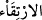
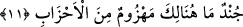

Kime ne istersen verirsin,
Başkalarına bu güç nasıl uygun olsun,
Bu güç ve yetkiyi kullanmak sana âiddir.

10. Yahut göklerin, yerin ve ikisi arasında bulunanların hükümranlığı onların
elinde midir? Öyleyse (göklerin) yollarında yükselsinler (görelim)!
“Yahut göklerin, yerin ve ikisi arasında bulunanların hükümranlığı onların elinde
midir?” Bu ifâde, bir önceki ifâdeyi biraz daha ileri götürmektedir: Yoksa şu ulvî ve
süflî âlemlerin mülkü onların mı ki rabbânî meseleler hakkında konuşup akıl
yürütüyorlar; izzet ve kibriyâ sâhibi Allah’ın, kendisine has kıldığı ilâhî plânlarla ilgili
ahkâm kesiyorlar!
“Öyleyse (göklerin) yollarında yükselsinler (görelim)!”
“Öyleyse” ... ifâdesi, ibârede yer almayan bir şartın, yâni “Rabbinin rahmet hazineleri
onların yanındaysa” ifâdesinin cevabıdır. (
) yükselmek demektir.
Râğıb der ki: “Sebeb”, hurmanın yukarı çıkarıldığı ipe denir. “Öyleyse (göklerin)
yollarında yükselsinler (görelim)!” ifâdesi, “yoksa onların, üzerine çıkıp gizli sırları
dinledikleri bir merdivenleri mi var?” (et-Tûr 52/38) âyetine işârettir. Sebeb, başta bu
anlamı taşıdığı halde, sonraları kendisi sâyesinde herhangi bir şeye ulaşılan her
vâsıtaya “sebeb” denilmiştir.
Âyetin mânâsı şudur: Şayet mezkûr mülk kendilerininse, bir şeye ulaşmağa yarayan
bütün merdiven ve metodları kullanarak Arş’a yükselip üzerine kurulsunlar ve kâinâtın
tüm işlerini yönetsinler. Meselâ, tasvip ettiklerine ve dilediklerine vahiy indirsinler.
Burada, Mekkelilerle öyle bir dalga geçiliyor ki, hiç kimseyle bundan daha iyi dalga
geçilemez.

11. Onlar, çeşitli guruplardan oluşmuş bir ordudur; işte şurada bozguna
uğratılacaklardır.
(
), harb için hazırlanmış topluluktur. (
)’deki ( ), (
) “birşeyler yedim”
örneğinde olduğu gibi, azlık ve önemsizlik ifâde etmek için kullanılmıştır.
“Şurada” anlamındaki (
), üç kelimeden oluşmuştur: Yakın bir mekânı göstermeğe